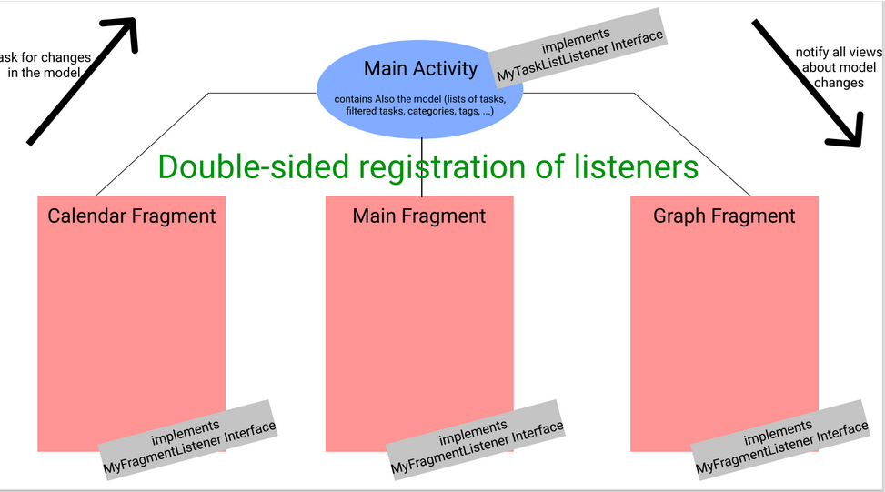

To-Do-List
This was a group work Members: Beroule, Pascal Bertrand, Lauriane Mankai, Yassine Waly, Mohamed Rached Wei, Xiang
What I learnt from this project:
→My first android application development. →Getting through the process of designing a graphical user interface precisely a user-centered approach. →Working with Processes and Application Lifecycle in android.
Personal contribution:
→Took part in the designing process of the game. →Worked on the main fragment of the application: the card view:
●Dynamic listing of tasks ●support of editing/adding tasks ●support for drag and drop to delete tasks
→Synchronizing the flow of data between the 3 first parts (filtering, editing, creating new tasks etc...): ●To do so, we used a double-sided registration of listeners: on one hand we found the Main Activity and on the other we found the 3 other fragments ( calendar, main and graph). This conception aims to keep the data management internal to the MainActivity. On the creation of the activity, we read data from a persistent memory (Json files or Database). On the destruction of the activity, we write the last state. This is made possible by the assumption of a small "data size" as a user won't handle too many tasks at the same time.Here is a visualisation of this concept:
